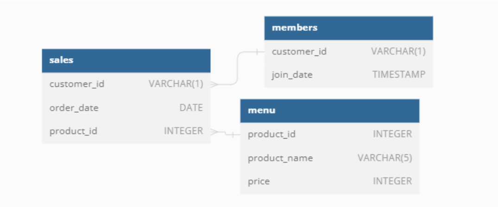

Case Study #1 - Danny’s Diner

Introduction
Danny seriously loves Japanese food so in the beginning of 2021, he decides to embark upon a risky venture and opens up a cute little restaurant that sells his 3 favourite foods: sushi, curry and ramen.
Danny’s Diner is in need of your assistance to help the restaurant stay afloat - the restaurant has captured some very basic data from their few months of operation but have no idea how to use their data to help them run the business.
Problem Statement
Danny wants to use the data to answer a few simple questions about his customers, especially about their visiting patterns, how much money they’ve spent and also which menu items are their favourite. Having this deeper connection with his customers will help him deliver a better and more personalised experience for his loyal customers.
He plans on using these insights to help him decide whether he should expand the existing customer loyalty program - additionally he needs help to generate some basic datasets so his team can easily inspect the data without needing to use SQL.
Danny has provided you with a sample of his overall customer data due to privacy issues - but he hopes that these examples are enough for you to write fully functioning SQL queries to help him answer his questions!
Danny has shared with you 3 key datasets for this case study:
salesmenumembers
You can inspect the entity relationship diagram and example data below.
Entity Relationship Diagram

Example Datasets
All datasets exist within the dannys_diner database schema - be sure to include this reference within your SQL scripts as you start exploring the data and answering the case study questions.
Table 1: sales
The sales table captures all customer_id level purchases with an corresponding order_date and product_id information for when and what menu items were ordered.
| customer_id | order_date | product_id |
|---|---|---|
| A | 2021-01-01 | 1 |
| A | 2021-01-01 | 2 |
| A | 2021-01-07 | 2 |
| A | 2021-01-10 | 3 |
| A | 2021-01-11 | 3 |
| A | 2021-01-11 | 3 |
| B | 2021-01-01 | 2 |
| B | 2021-01-02 | 2 |
| B | 2021-01-04 | 1 |
| B | 2021-01-11 | 1 |
| B | 2021-01-16 | 3 |
| B | 2021-02-01 | 3 |
| C | 2021-01-01 | 3 |
| C | 2021-01-01 | 3 |
| C | 2021-01-07 | 3 |
Table 3: members
The final members table captures the join_date when a customer_id joined the beta version of the Danny’s Diner loyalty program.
| customer_id | join_date |
|---|---|
| A | 2021-01-07 |
| B | 2021-01-09 |
Interactive SQL Session
The Dataset for this case study can be accessed from here. I will be using MySQL to solve this case study. In order to solve yourself this case study, simply go to the above link and choose MySQL Dialect (version > 8, if using MySQL version higher than 8 locally), copy & paste the Database schema into MySQL.
Here is the snapshot of it.
-- Creating the Database, Tables and Injecting the data into those tables --
CREATE DATABASE dannys_diner;
USE dannys_diner;
CREATE TABLE sales (
`customer_id` VARCHAR(1),
`order_date` DATE,
`product_id` INTEGER
);
INSERT INTO sales
(`customer_id`, `order_date`, `product_id`)
VALUES
('A', '2021-01-01', '1'),
('A', '2021-01-01', '2'),
('A', '2021-01-07', '2'),
('A', '2021-01-10', '3'),
('A', '2021-01-11', '3'),
('A', '2021-01-11', '3'),
('B', '2021-01-01', '2'),
('B', '2021-01-02', '2'),
('B', '2021-01-04', '1'),
('B', '2021-01-11', '1'),
('B', '2021-01-16', '3'),
('B', '2021-02-01', '3'),
('C', '2021-01-01', '3'),
('C', '2021-01-01', '3'),
('C', '2021-01-07', '3');
CREATE TABLE menu (
`product_id` INTEGER,
`product_name` VARCHAR(5),
`price` INTEGER);
INSERT INTO menu
(`product_id`, `product_name`, `price`)
VALUES
('1', 'sushi', '10'),
('2', 'curry', '15'),
('3', 'ramen', '12');
CREATE TABLE members (
`customer_id` VARCHAR(1),
`join_date` DATE
);
INSERT INTO members
(`customer_id`, `join_date`)
VALUES
('A', '2021-01-07'),
('B', '2021-01-09');Case Study Questions
Each of the following case study questions can be answered using a single SQL statement:
1. What is the total amount each customer spent at the restaurant?
SELECT SALES.customer_id, SUM(MENU.price) as Total_amt_spend
FROM SALES
LEFT JOIN MENU ON
SALES.product_id = MENU.product_id
GROUP BY SALES.customer_id
ORDER BY SUM(SALES.customer_id) ASC;Output:
| customer_id | Total_amt_spend |
|---|---|
| A | 76 |
| B | 74 |
| C | 36 |
Analysis of Total Amount Spent by Customers
Customer Spending Overview:
- Customer A has spent a total of $76 at the restaurant, making them the highest spender among all customers.
- Customer B follows closely behind, with a total expenditure of $74.
- Customer C has spent $36 in total, which is notably lower compared to customers A and B.
Identifying High-Value Customers:
- Customers A and B emerge as high-value customers, contributing significantly to the restaurant’s revenue.
- Focusing on retaining and incentivizing these customers through loyalty programs or personalized offers could enhance customer retention and overall profitability.
Opportunities for Targeted Marketing:
- Targeted marketing campaigns can be designed to attract new customers or encourage existing ones to increase their spending.
- By analyzing the preferences and behavior of high-spending customers, the restaurant can refine its menu offerings and promotional activities to cater to their preferences effectively.
2. How many days has each customer visited the restaurant?
SELECT SALES.customer_id, SUM(MENU.price) as Total_amt_spend
FROM SALES
LEFT JOIN MENU ON
SALES.product_id = MENU.product_id
GROUP BY SALES.customer_id
ORDER BY SUM(SALES.customer_id) ASC;Output:
| customer_id | number_of_visits |
|---|---|
| A | 4 |
| B | 6 |
| C | 2 |
Analysis of Customer Visitation Patterns
Frequency of Visits:
- Customer A has visited the restaurant on 4 different days, indicating moderate visitation frequency.
- Customer B has visited the restaurant on 6 days, suggesting a higher frequency of visits compared to other customers.
- Customer C has visited the restaurant on 2 days, indicating relatively infrequent visits.
Leveraging Personalized Marketing for Customer Retention and Revenue Growth:
- Implementing personalized marketing strategies tailored to customers like Customer C presents an opportunity for enhanced customer retention and revenue growth. By offering customized plans based on individual preferences, the restaurant can foster loyalty, encourage repeat visits, and ultimately drive increased spending. This targeted approach not only strengthens customer relationships but also maximizes profitability, contributing to long-term sustainability and success.
5. Which item was the most popular for each customer?
WITH most_popular
AS (SELECT SALES.customer_id,
MENU.product_name,
COUNT(MENU.product_name) AS order_cnt,
DENSE_RANK() OVER (PARTITION BY SALES.customer_id ORDER BY COUNT(SALES.customer_id) DESC) as `Dense_Rank`
FROM SALES JOIN MENU ON
MENU.product_id = SALES.product_id
GROUP BY SALES.customer_id, MENU.product_name
)
SELECT customer_id, product_name, order_cnt
FROM most_popular
WHERE `Dense_Rank` = 1;Output:
| customer_id | product_name | order_cnt |
|---|---|---|
| A | ramen | 3 |
| B | curry | 2 |
| B | sushi | 2 |
| B | ramen | 2 |
| C | ramen | 3 |
Analysis of Most Popular Item for Each Customer
Customer-Specific Preferences:
- Customer A’s most popular item is “ramen,” with a total of 3 orders, indicating a preference for this menu item.
- Customer B has multiple most popular items, including “curry,” “sushi,” and “ramen,” each with 2 orders, suggesting diverse preferences.
- Customer C’s most popular item is also “ramen,” with 3 orders, indicating a consistent preference for this menu item.
6. Which item was purchased first by the customer after they became a member?
WITH first_item_purchased AS (
SELECT
MEMBERS.customer_id AS customer_id,
SALES.product_id AS product_id,
DENSE_RANK() OVER (PARTITION BY MEMBERS.customer_id ORDER BY SALES.order_date ASC) AS DRank
FROM MEMBERS
JOIN SALES ON SALES.customer_id = MEMBERS.customer_id AND SALES.order_date > MEMBERS.join_date
)
SELECT
first_item_purchased.customer_id AS customer_id,
MENU.product_name
FROM first_item_purchased
JOIN MENU ON first_item_purchased.product_id = MENU.product_id
WHERE Drank = 1
ORDER BY customer_id ASC;Output:
| customer_id | product_name |
|---|---|
| A | ramen |
| B | sushi |
Analysis of First Item Purchased by Customers After Becoming a Member
Membership Engagement:
- Customer A’s first purchase after becoming a member was “ramen,” indicating their choice of menu item soon after joining the loyalty program.
- Customer B’s initial purchase post-membership was “sushi,” suggesting a different menu preference compared to Customer A.
7. Which item was purchased just before the customer became a member?
WITH first_item_purchased AS (
SELECT
MEMBERS.customer_id AS customer_id,
SALES.product_id AS product_id,
DENSE_RANK() OVER (PARTITION BY MEMBERS.customer_id ORDER BY SALES.order_date DESC) AS DRank
FROM MEMBERS
JOIN SALES ON SALES.customer_id = MEMBERS.customer_id AND SALES.order_date < MEMBERS.join_date
)
SELECT
first_item_purchased.customer_id AS customer_id,
MENU.product_name
FROM first_item_purchased
JOIN MENU ON first_item_purchased.product_id = MENU.product_id
WHERE Drank = 1
ORDER BY customer_id ASC;Output:
| customer_id | product_name |
|---|---|
| A | sushi |
| A | curry |
| B | sushi |
Analysis of Last Item Purchased Before Becoming a Member
Pre-Membership Purchases:
- Customer A’s last purchases before becoming a member were “sushi” and “curry,” indicating their menu preferences just before joining the loyalty program.
- Customer B’s final purchase before membership was also “sushi,” suggesting their menu choice before becoming a member.
8. What is the total items and amount spent for each member before they became a member?
SELECT SALES.customer_id,
COUNT(SALES.product_id) AS total_items_purchased,
SUM(MENU.price) AS amount_spent
FROM SALES
INNER JOIN MEMBERS
ON SALES.customer_id = MEMBERS.customer_id AND SALES.order_date < MEMBERS.join_date
JOIN MENU
ON MENU.product_id = SALES.product_id
GROUP BY SALES.customer_id
ORDER BY SALES.customer_id;Output:
| customer_id | total_items_purchased | amount_spent |
|---|---|---|
| A | 2 | 25 |
| B | 3 | 40 |
Analysis of Total Items and Amount Spent Before Becoming a Member
Pre-Membership Purchases Overview:
- Customer A made a total of 2 purchases before becoming a member, with a corresponding total amount spent of $25.
- Customer B made 3 purchases before joining the loyalty program, amounting to a total expenditure of $40.
9. If each $1 spent equates to 10 points and sushi has a 2x points multiplier how many points would each customer have?
WITH cte AS (
SELECT
MENU.product_id,
(CASE WHEN MENU.product_name = 'sushi' THEN 20 * MENU.price
ELSE 10 * MENU.price END) AS Points
FROM MENU)
SELECT SALES.customer_id AS Customer_Id,
SUM(cte.points) AS Total_Points
FROM SALES LEFT JOIN cte ON
SALES.product_id = cte.product_id
GROUP BY SALES.customer_id
ORDER BY SALES.customer_id;Output:
| customer_id | Total_Points |
|---|---|
| A | 860 |
| B | 940 |
| C | 360 |
Analysis of Loyalty Points Earned by Customers
Total Loyalty Points Earned:
- Customer A has earned a total of 860 loyalty points based on their purchases.
- Customer B has accumulated 940 loyalty points, indicating a higher level of engagement with the loyalty program.
- Customer C has earned 360 loyalty points, reflecting their lower spending and engagement compared to other customers.
10. In the first week after a customer joins the program (including their join date) they earn 2x points on all items, not just sushi how many points do customer A and B have at the end of January?
WITH dates_cte AS (
SELECT customer_id, join_date,
DATE_ADD(join_date, INTERVAL 6 DAY) AS valid_date,
LAST_DAY('2021-01-01') AS month_end_date
FROM members
) SELECT DC.customer_id,
SUM(CASE WHEN S.order_date BETWEEN DC.join_date AND DC.valid_date THEN M.price * 20
WHEN M.product_name = 'sushi' THEN M.price * 20
ELSE M.price * 10 END) AS total_points
FROM dates_cte AS DC
JOIN sales AS S
ON DC.customer_id = S.customer_id
JOIN menu AS M
ON M.product_id = S.product_id
WHERE S.order_date <= DC.month_end_date
GROUP BY DC.customer_id;Output:
| customer_id | total_points |
|---|---|
| B | 820 |
| A | 1370 |
Analysis of Loyalty Points Earned in January with 2x Points Promotion
Total Points Earned in January:
- Customer A has earned a total of 1370 loyalty points by the end of January, taking advantage of the 2x points promotion in the first week after joining the program.
- Customer B has accumulated 820 loyalty points by the end of January, also benefiting from the promotional offer during the first week.
BONUS QUESTIONS:
Part 1 - Join All The Things: Recreate the table with: customer_id, order_date, product_name, price, member (Y/N) that looks like the below:
Desired Table:
| customer_id | order_date | product_name | price | Member |
|---|---|---|---|---|
| A | 2021-01-01 | sushi | 10 | N |
| A | 2021-01-01 | curry | 15 | N |
| A | 2021-01-07 | curry | 15 | Y |
| A | 2021-01-10 | ramen | 12 | Y |
| A | 2021-01-11 | ramen | 12 | Y |
| A | 2021-01-11 | ramen | 12 | Y |
| B | 2021-01-01 | curry | 15 | N |
| B | 2021-01-02 | curry | 15 | N |
| B | 2021-01-04 | sushi | 10 | N |
| B | 2021-01-11 | sushi | 10 | Y |
| B | 2021-01-16 | ramen | 12 | Y |
| B | 2021-02-01 | ramen | 12 | Y |
| C | 2021-01-01 | ramen | 12 | N |
| C | 2021-01-01 | ramen | 12 | N |
| C | 2021-01-07 | ramen | 12 | N |
SELECT
SALES.customer_id,
SALES.order_date,
MENU.product_name,
MENU.price,
CASE WHEN SALES.order_date >= MEMBERS.join_date THEN 'Y' ELSE 'N' END AS `Member`
FROM SALES LEFT JOIN MEMBERS ON
SALES.customer_id = MEMBERS.customer_id
JOIN MENU ON
SALES.product_id = MENU.product_id
ORDER BY SALES.customer_id ASC, SALES.order_date ASC;Output:
| customer_id | order_date | product_name | price | Member |
|---|---|---|---|---|
| A | 2021-01-01 | sushi | 10 | N |
| A | 2021-01-01 | curry | 15 | N |
| A | 2021-01-07 | curry | 15 | Y |
| A | 2021-01-10 | ramen | 12 | Y |
| A | 2021-01-11 | ramen | 12 | Y |
| A | 2021-01-11 | ramen | 12 | Y |
| B | 2021-01-01 | curry | 15 | N |
| B | 2021-01-02 | curry | 15 | N |
| B | 2021-01-04 | sushi | 10 | N |
| B | 2021-01-11 | sushi | 10 | Y |
| B | 2021-01-16 | ramen | 12 | Y |
| B | 2021-02-01 | ramen | 12 | Y |
| C | 2021-01-01 | ramen | 12 | N |
| C | 2021-01-01 | ramen | 12 | N |
| C | 2021-01-07 | ramen | 12 | N |
Part 2 - Rank All The Things: Danny also requires further information about the ranking of customer products, but he purposely does not need the ranking for non-member purchases so he expects null ranking values for the records when customers are not yet part of the loyalty program.:
Desired Table:
| customer_id | order_date | product_name | price | Member | ranking |
|---|---|---|---|---|---|
| A | 2021-01-01 | sushi | 10 | N | null |
| A | 2021-01-01 | curry | 15 | N | null |
| A | 2021-01-07 | curry | 15 | Y | 1 |
| A | 2021-01-10 | ramen | 12 | Y | 2 |
| A | 2021-01-11 | ramen | 12 | Y | 3 |
| A | 2021-01-11 | ramen | 12 | Y | 3 |
| B | 2021-01-01 | curry | 15 | N | null |
| B | 2021-01-02 | curry | 15 | N | null |
| B | 2021-01-04 | sushi | 10 | N | null |
| B | 2021-01-11 | sushi | 10 | Y | 1 |
| B | 2021-01-16 | ramen | 12 | Y | 2 |
| B | 2021-02-01 | ramen | 12 | Y | 3 |
| C | 2021-01-01 | ramen | 12 | N | NULL |
| C | 2021-01-01 | ramen | 12 | N | NULL |
| C | 2021-01-07 | ramen | 12 | N | NULL |
WITH all_data AS (
SELECT
SALES.customer_id, SALES.order_date, MENU.product_name, MENU.price,
CASE WHEN SALES.order_date >= MEMBERS.join_date THEN 'Y' ELSE 'N' END AS `Member`
FROM SALES LEFT JOIN MENU ON
SALES.product_id = MENU.product_id
LEFT JOIN MEMBERS ON
SALES.customer_id = MEMBERS.customer_id)
SELECT all_data.*,
CASE WHEN all_data.Member = 'Y' THEN RANK() OVER (PARTITION BY all_data.customer_id, all_data.member
ORDER BY all_data.order_date) ELSE NULL
END AS 'ranking'
FROM all_data;Output:
| customer_id | order_date | product_name | price | Member | ranking |
|---|---|---|---|---|---|
| A | 2021-01-01 | sushi | 10 | N | null |
| A | 2021-01-01 | curry | 15 | N | null |
| A | 2021-01-07 | curry | 15 | Y | 1 |
| A | 2021-01-10 | ramen | 12 | Y | 2 |
| A | 2021-01-11 | ramen | 12 | Y | 3 |
| A | 2021-01-11 | ramen | 12 | Y | 3 |
| B | 2021-01-01 | curry | 15 | N | null |
| B | 2021-01-02 | curry | 15 | N | null |
| B | 2021-01-04 | sushi | 10 | N | null |
| B | 2021-01-11 | sushi | 10 | Y | 1 |
| B | 2021-01-16 | ramen | 12 | Y | 2 |
| B | 2021-02-01 | ramen | 12 | Y | 3 |
| C | 2021-01-01 | ramen | 12 | N | NULL |
| C | 2021-01-01 | ramen | 12 | N | NULL |
| C | 2021-01-07 | ramen | 12 | N | NULL |